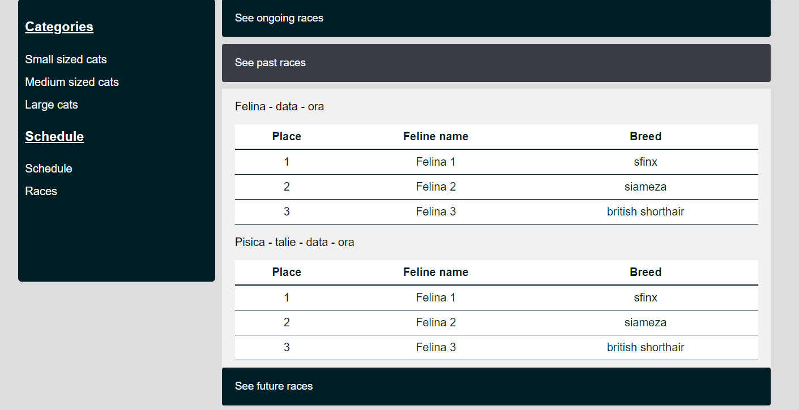
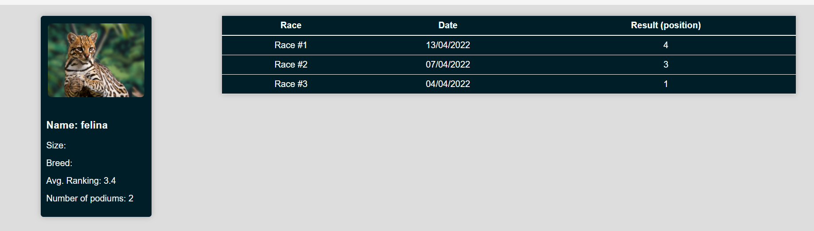
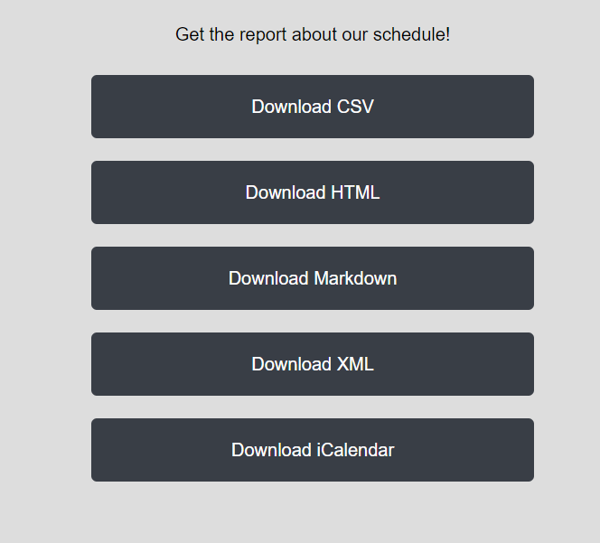
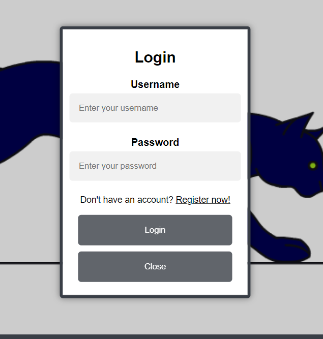
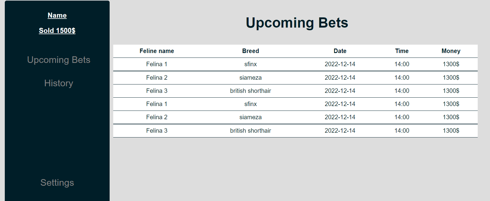
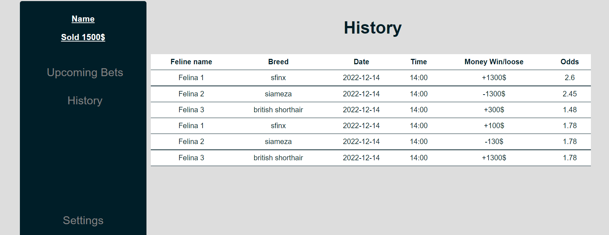
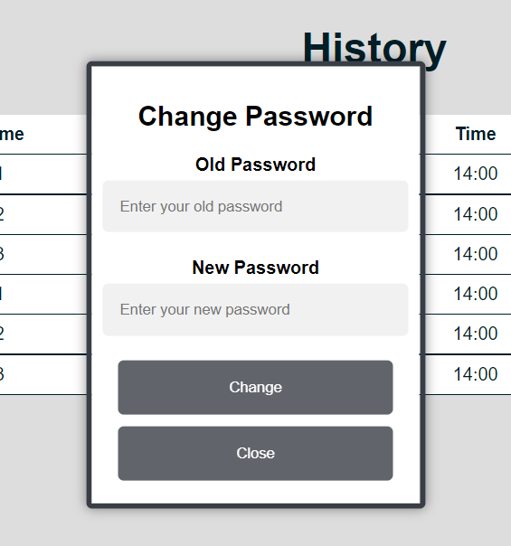
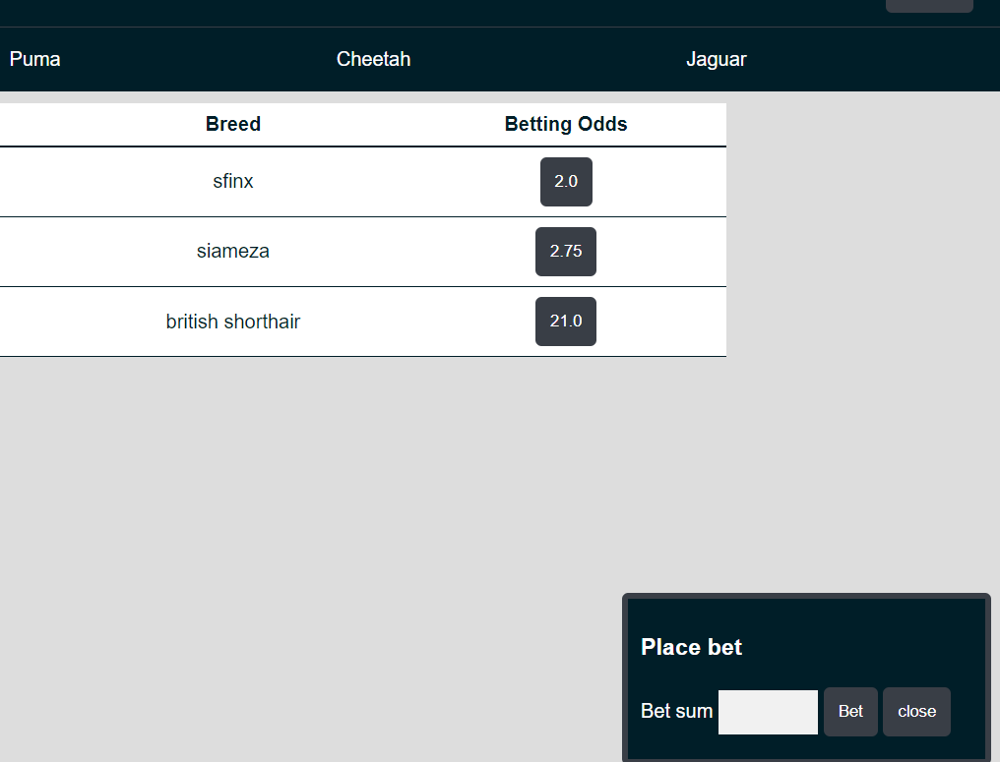
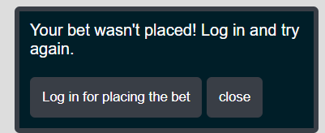

<main>
    <div class="panel" id="main_panel">
        <h1 id="title">Cat Race on Web (CaR)</h1>
        <section id="main_container">
            <h2>Autori</h2>
            <ul typeof="sa:ContributorRole" property="schema:author">
                <li>
                    <meta property="schema:givenName" content="Andreea">
                    <meta property="schema:familyName" content="Condurache">
                    <span property="schema:name">Andreea Condurache</span>
                </li>
                <li>
                    <meta property="schema:givenName" content="Ana Maria">
                    <meta property="schema:familyName" content="Oprea">
                    <span property="schema:name">Ana Maria Oprea</span>
                </li>
                <li>
                    <meta property="schema:givenName" content="Andrei">
                    <meta property="schema:familyName" content="Furtuna">
                    <span property="schema:name">Andrei Furtuna</span>
                </li>
            </ul>
            <h2>Cuprins</h2>
            <ol>
                <li><a href="#introduction">Introducere</a></li>
                <ul>
                    <li>1.1 <a href="#purpose">Scop</a></li>
                    <li>1.2 <a href="#conventions">Convențiile documentelor</a></li>
                    <li>1.3 <a href="#suggestions">Publicul destinat și sugestiile de lectură</a></li>
                    <li>1.4 <a href="#product_purpose">Domeniul de aplicare al produsului</a><br></li>
                </ul>
                <li><a href="#description">Descriere generală</a></li>
                <ul>
                    <li>2.1 <a href="#perspectiva">Perspectiva produsului</a></li>
                    <li>2.2 <a href="#clase">Clase de utilizator și caracteristici</a></li>
                    <li>2.3 <a href="#operare">Mediul de operare</a></li>
                    <li>2.4 <a href="#constrangeri">Constrângeri de proiectare și implementare</a></li>
                </ul>
                <li><a href="#interfata">Cerințe de interfață externă</a></li>
                <ul>
                    <li>3.1 <a href="#utiliz">Interfețe utilizator</a></li>
                </ul>
            </ol>
            <hr>
            <section typeof="sa:Abstract" id="abstract" role="doc-abstract">
                <h2 id="introduction">1.Introducere</h2>
                <h5>CaR este o aplicatie care ofera clientilor posibilitatea de a realiza pariuri pe curse de feline,
                    fiind usor si intuitiv de utilizat.
                    Design-ul este unul atractiv prin intermediul caruia putem avea acces la numeroase oportunitati de
                    pariuri pe o gama variata de curse si de feline (pisici, pume, pantere, tigri si gheparzi).
                </h5>
            </section>

            <h3 id="purpose">1.1 Scop</h3>
          Scopul este unul strict de divertisment, utilizatorul poate urmari oricand cursele cu feline aflate in desfasurare, poate paria pe anumite feline 
          si poate vedea potentialul de profit pe care l-ar obtine daca ar paria pe o anumite pisica. De asemenea, se pot observa si pe ce locuri s-au aflat pisicile in competitiile
          anterioare, precum si datele viitoarelor curse de feline. 
            </p>


            <h3 id="conventions">1.2 Convențiile documentelor</h3>
            <p>In scrierea acestui SRS am avut in vedere parametrii normali de indentare si pozitionare in pagina.Titlul
                este scris cu "h1", fiind bold si cel mai mare din pagina, urmand ca fiecare titlu de paragraf sa fie
                scris cu"h2", iar subtitlurile
                cu "h3". Am considerat informatiile din paragraful de introducere fiind mai importante decat celelalte,
                de aceea am folosit "h5" bold, dar un scris nu prea mare. Restul paragrafelor sunt scrise in "p".
                Delimitarea categoriile am facut-o
                printr-un "hr".
            </p>
            <h3 id="suggestions">1.3 Publicul destinat și sugestiile de lectură</h3>
            <p>Aplicatia este destinata pasionatilor de curse de feline pentru a paria in timp real pe o anumita cursa
                aflata in desfasurare, cat si pe una care se va desfasura in viitor.
                De asemenea, fiecare felina implicata in cursa va avea un istoric al curselor cat si un rank care
                reprezinta media castigurilor ale curselor la care a participat.
                Utilizatorii sunt in general persoane care isi doresc sa obtina un castig pe baza cursei de pisici, iar
                in functie de cota si de suma investita intr-o cursa. Acest
                document contine un cuprins interactiv pentru a vizualiza exact obiectul de interes.
            </p>
            <hr>

            <h2 id="description">2. Descriere generală</h2>

            <h3 id="perspectiva">2.1 Perspectiva produsului</h3>

            <p>
                Aplicatia CaR este o aplicatie folosita atat pentru entertainment, sa poti vizualiza cursele si pisicile
                implicate, cat si pentru o crestere a venitului prin intermediul pariurilor.
                Aceasta este alcatuita dintr-o pagina de home si cea informativa prin intermediul careia se poate accesa
                istoricul curselor si tipurile de pisici.
                CaR-ul este o aplicatie unica care concureaza cu marile site-uri de pariuri.
            </p>
            <h3 id="clase">2.2 Clase de utilizator și caracteristici</h3>
            <p>Aplicatia permite prezenta a doua tipuri de utilizatori, administratorii care pot face modificari asupra bazei de date si a unor aspecte organiatorice.
                Un alt tip de urilizator sunt clientii, adice cei care pariaza.
            </p>
            <h3 id="operare">2.3 Mediul de operare</h3>
            <p>
                Aplicatia va fi compatibila pe orice dispozitiv functional cu acces la internet prin cablu sau date si
                va putea fi lansata atat pe
                Windows cat si pe Linux. Universalitatea ii ofera un plus considerabil cand vine vorba de utilizare.
            </p>
            <h3 id="constrangeri">2.4 Constrângeri de proiectare și implementare</h3>
            <p>
                CaR este o aplicatie practica care isi atinge cu succes scopul pentru care a fost creata.
                Limitarea consta in imposibilitatea extragerii numerar a sumei obtinute pe baza pariurilor,cursele fiind virtuale.
            </p>

            <hr>
            <h2 id="interfata">3. Cerințe de interfață externă</h2>

            <h3 id="utiliz">3.1 Interfețe utilizator</h3>
            <p typeof="sa:accessibilitySummary">
                Administratorii pot adauga noi curse si inregistra noi feline folosind formularul pus la dispoziție de
                către aplicație pe(admin-add-competitor.html),
            </p>
            <figure typeof="sa:image">
                
            </figure>
            <p>vizualizarea curselor trecute, prezente si viitoare facandu-se pe pagina(live-races.html) .</p>
            <figure typeof="sa:image">
                
            </figure>
            <p>Fiecare felina va dispune de o rubrica informativa, ca un mic cv de forma:</p>
            <figure typeof="sa:image">
                
            </figure>
            <p> De asemenea de pe aceeasi pagina la sectiunea Categories putem accesa schedule(schedule.html) oferind
                astfel starea actuala a pariurilor,
                cat si calendarul (disponibil in formatul iCalendar) despre desfasurarea curselor din viitorul apropiat.
            </p>
            <figure typeof="sa:image">
                
            </figure>
            <p typeof="sa:accessibilitySummary">
                Pe pagina de Home utilizatorii trebuie sa se inregistreze
                folosind o adresa de email, un username si o parola sau sa se conecteze daca au deja cont.
                Dupa ce acestia s-au inregistrat, vor primi pe mail confirmarea.
            </p>
            <figure typeof="sa:image">
                
            </figure>
            <p typeof="sa:accessibilitySummary">Dupa inregistrare, acestia se pot loga in contul propriu.</p>
            <figure typeof="sa:image">
                
            </figure>
            <figure typeof="sa:image">
                
            </figure>
            <p typeof="sa:accessibilitySummary">Odata logati, acestia pot isi pot accesa profilul si pot intra pe pagina
                de setari,upcoming bets si history.
                Prin apasarea butonului Settings utilizatorul conectat isi poate modifica parola, urmand sa primeasca
                confirmare prin email.
            </p>
            <figure typeof="sa:image">
                
            </figure>
            <p typeof="sa:accessibilitySummary">Accesul la realizarea de pariuri se poate face doar pentru persoanele
                conectatate.</p>

            <p typeof="sa:accessibilitySummary">Odata logati, acestia pot isi pot accesa profilul si pot intra pe pagina
                de setari,upcoming bets si history.</p>
            <p typeof="sa:accessibilitySummary">Accesul la realizarea de pariuri se poate face doar pentru persoanele
                conectate.</p>
            <figure typeof="sa:image">
                
            </figure>
            <p>In cazul in care un utilizator nu este conectat si vrea sa parieze pe o cota ii va aparea acest mesaj</p>
            <figure typeof="sa:image">
                
            </figure>
        </section>